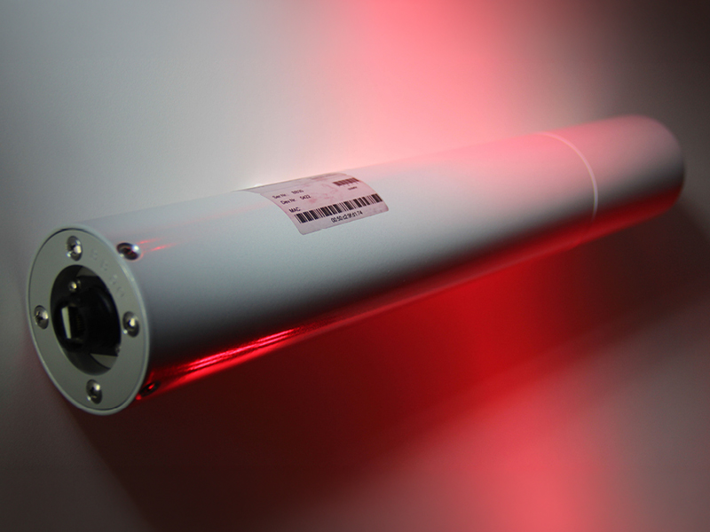

GAMMA DETECTORS
Gamma Detector RS04
Radiation measuring detector for gamma radiation
Our gamma detector model RS04 is designed for measuring radioactivity in ambient dose equivalent and is equipped with a proportional counter tube.
Due to its robustness, measurement sensitivity and accuracy due to the wide range of measurement ranges and its ability to operate over a very wide temperature range, the Gamma RS04 detector is the ideal instrument for radiation early warning and radioactivity monitoring systems.
The gamma detector, Type RS04, is calibrated in „ambient dose equivalent units [H * (10)]. The measuring range covers up to 9 decades (from 10 nSv/h to 10 Sv/h). With this wide range of measurement, the RS04 gamma probe can detect minimal changes in natural ambient radiation but also enables the measurement of high dose rates.
-
Range of applications:
- As a sensor in a network for a large-scale early warning radiation system
- Monitoring of nuclear installations and facilities for the storage and treatment of nuclear waste (ring monitoring)
- Measuring unit in scientific and development institutions
- Monitoring station at borders, airports, train stations, in airplanes etc.
- Underwater Measurement, Data Buoy, Submarine AUVs (Autonomous Underwater Vehicle)
- Air measurements with UAVs (Unmanned Aerial Vehicle)
- Municipal control unit, mainly for the immediate control of accident radiation of the nuclear industry
- Measuring unit in the private sector (e.g. fallout shelter)

Proportional counter tube
The RS04 is a proportional counter tube and therefore unlike the Geiger-Müller counter tube (GM) has no dead time and is not saturated - with significantly higher durability.
Measuring range up to 9 decades
As a result, the Gamma RS04 probe can detect even minor changes in the natural ambient radiation and at the same time enables the measurement of high dose rates (up to 10 Sv/h).
Robustness
Due to the wide temperature range from –30°C to + 70°C and practical freedom from maintenance, the gamma detector RS04 is almost indestructible. Customers have our detectors in continuous operation for up to 30 years.
A powerful online data sensor
Whether it's the RS232, 422, 485 or Web interface, the RS04 gamma probe provides real-time data 24 hours a day, 7 days a week, 52 weeks a year, even every second! In addition, our USB converter offers the possibility to connect the gamma detector RS04 to any standard PC with USB interface. The interface converter also serves as a power supply.
Extended application possibilities through Gihmm product combinations
- In combination with our autonomous measuring stations, you can take measurements in areas without existing infrastructure. The station is equipped with a solar panel, a back-up battery, etc. and allows the uninterruptible power supply of the Gamma probe RS04.
- Use the RS04 with our GAMMO TOOLs and go on-site to perform in situ measurements to determine possible elevated ambient dose rates near nuclear facilities.
- Use the RS04 with our diving tube and measure the gamma radiation underwater, e.g. by installation on a data buoy or submarine AUV's.
Early warning radiation system
In combination with autonomous measurement stations, which also allow measurement stations in areas with no infrastructure, our RS04 gamma detectors are used for nationwide networks – or for limited but extensive areas to indicate a change in natural dose rate response. This early warning radiation network for measuring radioactivity allows changes to be displayed immediately. In addition, it is possible to determine the direction and thus the origin of the propagation of ionizing radiation from one stationary measuring station to the next – taking into account the weather conditions (wind, precipitation).
Ring monitoring
Around a monitored object (nuclear power plants, nuclear waste disposal plants or nuclear waste treatment plants, mines for the extraction of uranium and thorium) a „ring“ is drawn from several individual radiation measuring stations, similar to a fence. Thus, a so-called ERMS (Environmental Radioactive Monitoring System) was formed, which immediately indicates minor changes in the natural environmental radiation through the „fenced“ object. (see schematic representation of an ERMS).
Data buoys
The use of RS04 gamma detectors in so-called data buoys (buoys with sensors for wind, precipitation, solar radiation, wave height, radar, position lights, solar panels, etc.) is used to measure radioactivity underwater near-surface (1 m below the waterline ), which are mostly used near the coast. The buoys can autonomously detect the radioactivity in seawater, freshwater, sewage or drinking water 24 hours a day. In particular, this allows monitoring of countries operating their nuclear power plants near the coast or monitoring by their neighbouring countries.
- Detector: Proportional counter, Type NPGD 02 with energy compensation
- Temperature range: -30°C ÷ +70°C
- Temperature dependence: less than ±5%
- Measuring uncertainty:
[H*(10)] ≤ 1 Sv/h: ±10%
[H*(10)] > 1 Sv/h: ±15% - Output: RS-232 or RS-485 or RS-422 or TCP/IP